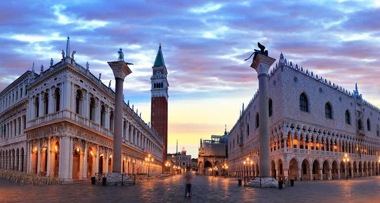

Italy
Italian Cities
- Florence
- Pompeii
- Rome
- Venice
Italian Landmarks
- Duomo
- Pompeii
- Colosseum
- St. Mark's Square
Notable Italian Citizens
- Rita Levi Montalcini: Rita Montalcini is a Nobel laureate who is reknowned for her ground-breaking research into neurobiology and her discovery of the Nerve Growth Factor (NGF).
- Enrico Fermi: Enrico has been called the "architect of the nuclear age"
- Galileo Galilei
- Maria Montessori
- Megan McCoy
- Tessa Steffen
- Travis Pinson
- Braxton Shoop